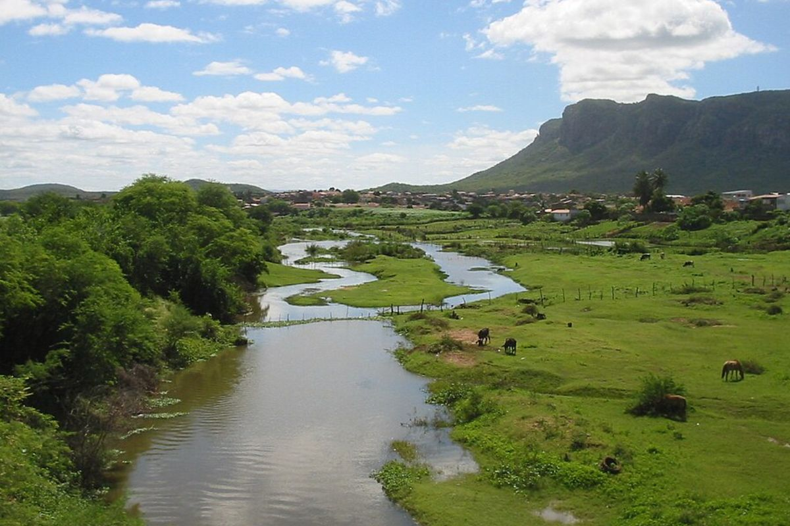

🇧🇷 Português
O Rio Pajeú nasce na serra da Balança, em Brejinho, e é um dos principais afluentes do rio São Francisco. É um rio sazonal que abastece 28 municípios do sertão pernambucano.
Famoso por inspirar canções como as de Luiz Gonzaga e obras literárias, o Pajeú é fundamental para a identidade cultural e econômica das cidades que banha, como Serra Talhada e Flores.
🇺🇸 English
The Pajeú River originates in the Serra da Balança and is one of the main tributaries of the São Francisco River. It is a seasonal river that supplies 28 municipalities in the Pernambuco backlands.
Famous for inspiring songs by Luiz Gonzaga and literary works, the Pajeú is essential to the cultural and economic identity of the cities along its banks, such as Serra Talhada and Flores.